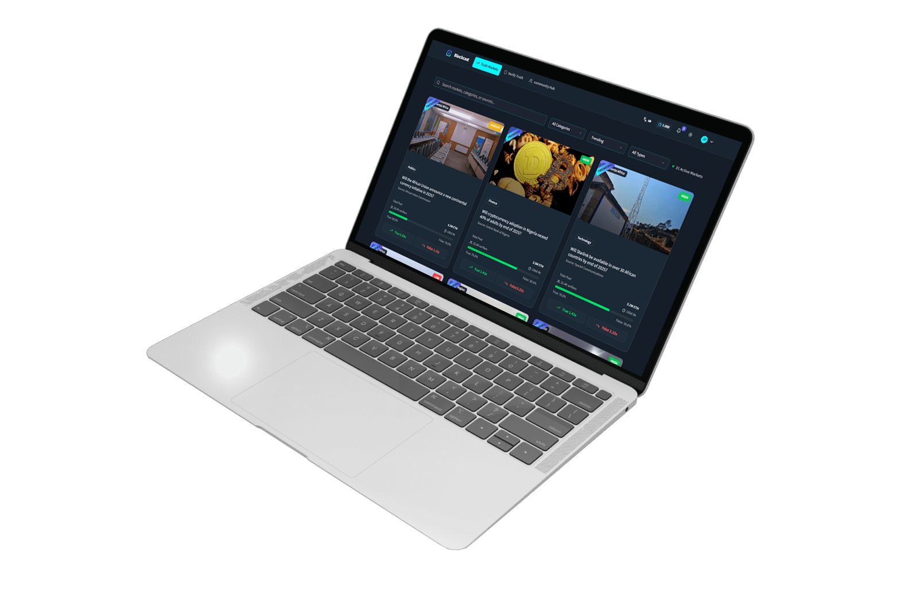
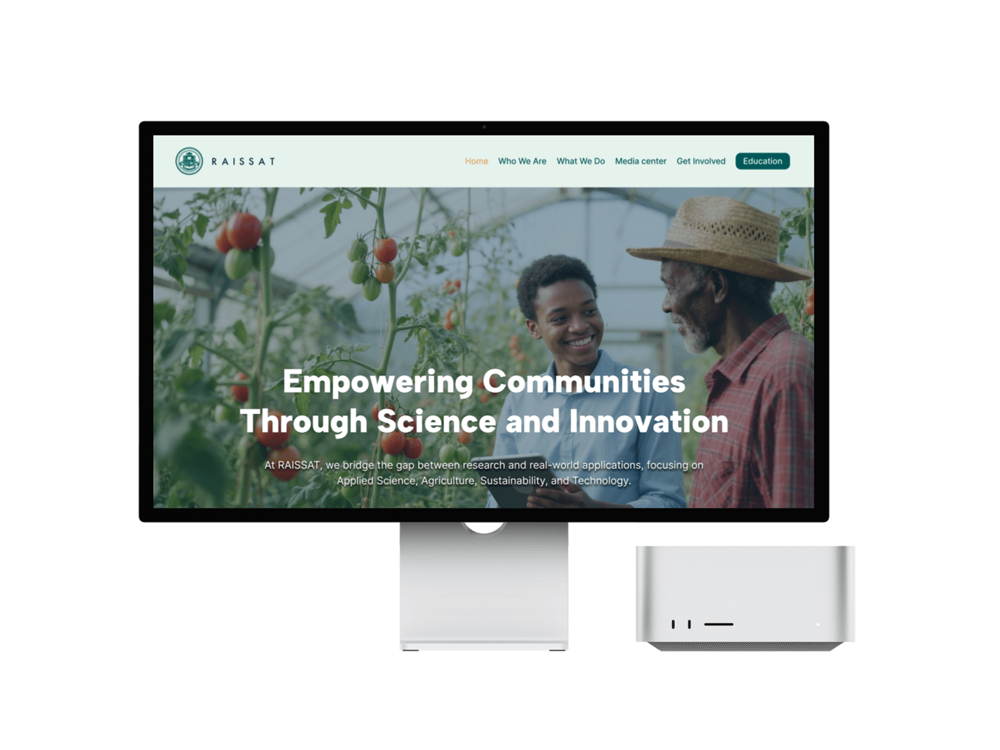
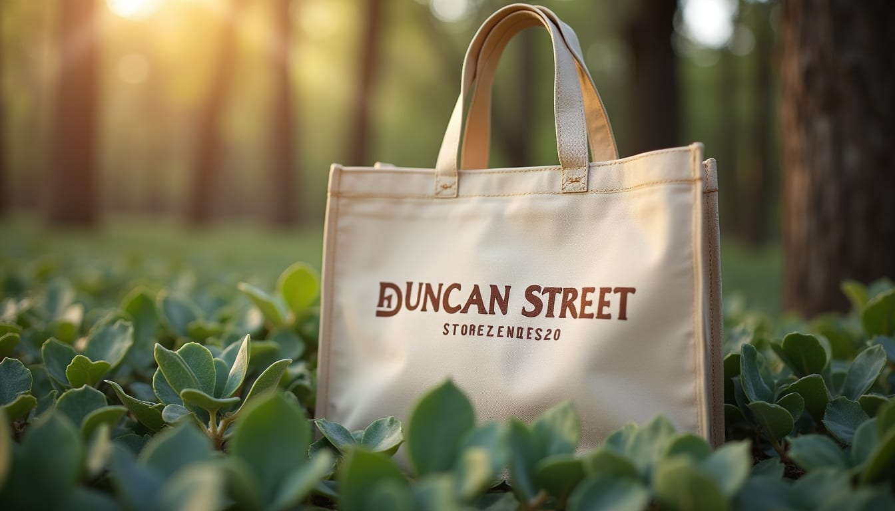

Veridox
One workspace for attendance, leave, payroll and everyday team coordination.
Product direction, interfaces and websites. Each case study explains the problem, my contribution and what was delivered.
6 projects shown
One workspace for attendance, leave, payroll and everyday team coordination.

A trading experience built around discovery, mutual interest and a clear proposal.

A product and interface study in evidence, AI analysis and community disputes.

A digital home that connects an institute’s purpose, programmes and membership.

Brand direction and an e-commerce prototype organised around three buying journeys.

A consultancy website organised around services, evidence and a useful next step.
The design archive brings together the craft behind the product work.
Tell me what you are building, who it is for, and where you are getting stuck.